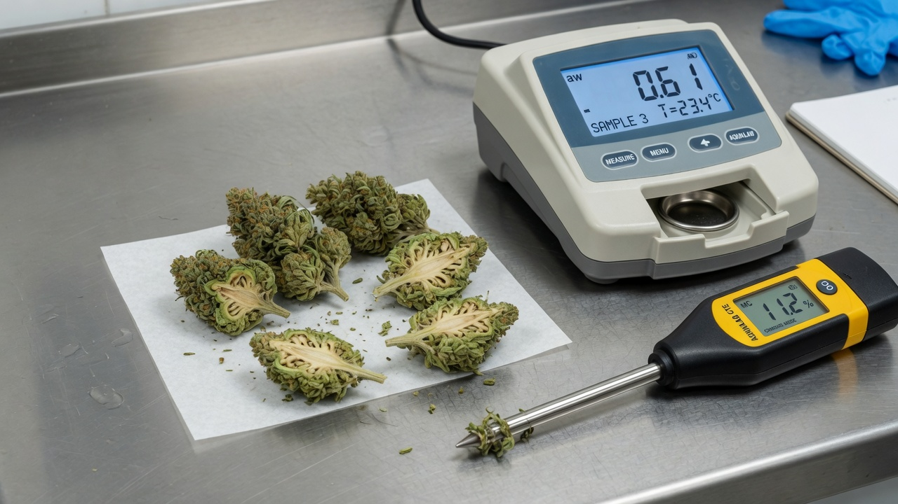

Harvest, dry, trim and cure
A beginner's guide to the full post-harvest process: when to cut, how to dry, how to trim, and how to cure flower so it is safe from mould and keeps its smell, weight and quality.
Why the last two weeks decide everything
Post-harvest is everything that happens after the plant is cut down: drying, trimming, curing and storage. Weeks of careful growing can be ruined in a few days here. Dry too fast or too dry and you lose smell and weight. Dry too slow or too wet and mould takes hold.
Aim for a narrow safe zone: dry enough that mould cannot grow, but not so dry that the smell and weight evaporate away. Done well, dialling in this stage often recovers sellable mass versus bone-dry flower; vendor education sometimes cites ~5-10% to final yield, because most growers are accidentally over-drying and losing sellable weight.[8]
Anyone harvesting their first crop who wants results they can repeat. This guide assumes zero prior knowledge and defines every term as it appears. It pairs with the mould-risk and airflow-design papers.
The words you need before we start
Two ideas do most of the work in this guide. Don't memorise them. Each one comes back in context.
When to harvest: reading the plant, not the calendar
Harvest is cutting the plants down once they have finished flowering. Judge maturity by the flower itself, not by a date on the calendar.
The clearest signal is the trichomes. Under a loupe they shift from clear, to milky-cloudy, to amber as the plant ripens, and that colour change tracks how mature the resin glands are.[1] A typical workflow runs plants on a set flowering timeline with plant-work phases at days 7-10, 21-28 and 42-49, then cuts at the end.
- Harvest = cutting down all plants once flowering is complete
- Cut one strain at a time, in the order on your strain list, so genetics never get mixed
- Keep each plant's tracking tag attached as it is cut. This is how batches stay traceable
- Collect loose buds that fall on the table (‘table nugs’) per strain, label them, and dry them separately
If the calendar says cut but the trichomes are still mostly clear, wait. Read maturity off the flower. The date is only a rough guide.
Cutting down and weighing the wet plant
Cut plants whole and hang them to dry, rather than stripping the buds first. Cutters free each plant from the lower two layers of trellis netting (the support grid the plant grew through), leave the top layer on for support, then cut the main stalk at its base.
Before anything is hung, weigh every bin to record the wet weight, the starting weight. Compared against the final dry weight later, this gives the dry-to-wet ratio for each genetic, which is often ~10% of whole-plant wet weight in many rooms (example batch came in at 10.46%). That tells you how much of the harvested mass is water.
- 1Free the plantCut a circle through the bottom and middle trellis layers. Leave the top layer attached for support.
- 2Cut the stalkSever the main stalk at its base so the whole plant comes away in one piece.
- 3Load the binPlace 7-10 whole plants per 55-gallon bin. Do not overfill or you bruise the flower.
- 4Weigh wetTare the bin first, then weigh it to capture wet weight, the baseline for all yield tracking.
The drying environment: slow, cool, dark, moving air
Hold the dry room at 60°F and 60% RH, with fans running and the lights off, in a room that was deep-cleaned before any plant went in. At these setpoints whole plants are typically ready in 10-14 days.[8]
Going slow and cool protects the terpenes, which evaporate in heat and dry air, and it stops the outside of the bud drying while the inside stays wet, the classic recipe for hidden mould. Keep the light off because it degrades cannabinoids and terpenes over time.[4] Different cultivars even reward slightly different drying approaches, so the setpoints are a strong default, not a law.[2]
- Setpoints: 60°F, 60% RH, fans on, lights off, doors closed. Minimise foot traffic so the environment stays stable
- Whole-plant drying takes about 10-14 days at these setpoints
- If the room runs above 60% RH and dehumidification is undersized, exhaust fans can pull humidity down
- Keep racks evenly spaced so air reaches every plant and buds dry uniformly. A deep clean precedes every load

Water activity: the number that controls mould and yield
Water activity is the safe-zone gauge for cannabis. Mould and yeast can grow at 0.70 aw and above, pathogenic bacteria at 0.85, and risk rises sharply toward ~0.70 aw and above; below ~0.55 quality often suffers even as microbes slow. ASTM’s 0.55–0.65 window is the practical target for dried flower.[7] That sets the ceiling. Quality sets the floor: below 0.55 aw the terpenes dry up and quality falls off.
Together that leaves a sweet spot of 0.55-0.65 aw, the exact range written into the ASTM D8197 standard for dry cannabis flower.[5] Start sample testing around day 7-8, and take plants down when the batch averages 0.60-0.62 aw, leaving a safety margin below the 0.65 mould line.
- Water activity is the better control number because it varies far less than cheap moisture readings.
- In one example, measuring on water activity gave roughly 10x tighter yield precision (±1% down to ±0.12%).
- Denser flowers tend to finish at a slightly lower aw than fluffy ones. Use the meter as a guide, but also trust your nose.
Trimming: wet vs dry, and protecting the trichomes
Trimming removes leaf so the bud looks clean and presentable. There are two timings. Wet trim means trimming right after cutting, before drying. Dry trim means trimming after the hang-dry. Dry trimming slows the dry and is gentler on the aromatic oils, which is why many operations choose it for better terpene retention.[3]
Never touch the flower itself. Handling knocks off the trichomes that carry potency and smell, leaving buds looking shaved and dull. To dry-trim, take plants down, cut them into 8-12 inch sections, remove the large fan leaves by hand, then scissor off the smaller sugar leaves, swapping scissors into 71% alcohol as resin builds up.
- Buck = cut the finished buds off the stem. Do this into a sealed bag so the flower does not over-dry in open air
- Never touch the flower. Handling damages trichomes
- Remove fan leaves (large, few trichomes) by hand, then scissor off sugar leaves
- Clean scissors in 71% alcohol when resin builds up
- After dry-trim, re-check aw — handling and leaf removal can change the reading, so do not assume the hang-dry number still holds
| Wet trim | Dry trim (this guide) | |
|---|---|---|
| When | Right after cutting | After the 10-14 day hang-dry |
| Drying speed | Faster, harsher | Slower, gentler |
| Leaf removal | Easier (leaf is soft) | Leaf is brittle, more care needed |
| Terpene retention | Lower (more handling, faster dry) | Higher, the reason it is chosen |
| Handling risk | More | Less |
Curing and storage: burp, stabilise, then seal
Curing lets the whole batch settle to one even water activity, and preserves terpenes that would otherwise break down in storage. Hold flower in containers at 60-65°F and 58-62% RH. Read a humidity sensor, and burp any bin reading above about 60% RH: lid off for 5-10 minutes, then rotate the barrel and log the reading.
Once the trimmed flower sits at 0.58-0.60 aw, it is finished: seal it and stop burping. Further burping just evaporates terpenes (lost smell) and water (lost sellable weight). Curing also keeps cannabinoids more stable by keeping the product cool and dark, the same conditions that slow degradation during storage.[4]
Every burp past the finish line evaporates terpenes and water weight you could have sold. When trimmed flower reaches 0.58-0.60 aw, seal it. Bags should be free of air but not compressed, and not stacked, to protect bud structure.
Common mistakes and how to avoid them
Most post-harvest failures are variations on going too fast, too dry, or too crowded. Over-drying is the quiet killer. A cheap moisture meter with ±1% error can read ‘11% moisture’ while the flower is anywhere from 0.53 aw (ruined, too dry) to 0.66 aw (mould risk), so growers chasing a single number often dry too far and lose weight and smell.[5]
| Mistake | What happens | Fix |
|---|---|---|
| Over-drying below 0.55 aw | Terpenes evaporate, smell fades, water weight lost | Take down at 0.60-0.62 aw, stop curing at 0.58-0.60 aw |
| Drying too hot / fast | Outside dries while inside stays wet, trapping mould | Hold 60°F / 60% RH and let it take 10-14 days |
| Trusting a cheap moisture meter | ±1% spans 0.53-0.66 aw, too dry to mouldy | Use water-activity testing to decide done |
| Overfilling containers | Crushed buds, trapped moisture | Fill totes/barrels no more than ~2/3, curing barrels no more than half |
| Touching the flower / skipping the deep clean | Knocked-off trichomes, contamination | Handle by stem only, deep-clean before every load |
| Safe aw but still smells wet | Inside not finished | Let it dry more. Your senses are the final check |
What realistic results look like
Expect roughly 10-14 days of hang-drying plus several more days of curing before flower is truly finished. The whole post-harvest stage is two-to-three weeks, not overnight, and there is no rushing it.
- It takes weeks, not days. Plan two-to-three weeks for the whole post-harvest stage and do not rush the dry.
- The payoff is real. Dialling in drying and curing can lift sellable weight when you stop over-drying (vendor ~5-10% figures are illustrative).[8]
- Genetics matter. Drying and curing are strain-dependent. Dense and fluffy flowers finish at slightly different aw points, so log every batch.[2]
Record the aw, RH, dates and outcomes for every genetic so good results are repeatable. The instrument is a guide, not a boss: inside the safe aw zone, trust smell and feel for the final call. When you are ready, read the mould-risk guide for what to do if a batch slips above the line, and the nutrient-mixing guide for the feed side of quality.
References
- Punja, Z.K., Sutton, D.B., & Kim, T. (2023). Glandular trichome development, morphology, and maturation are influenced by plant age and genotype in high THC-containing cannabis (Cannabis sativa L.) inflorescences. Journal of Cannabis Research, 5(1), 12. https://doi.org/10.1186/s42238-023-00178-9 https://doi.org/10.1186/s42238-023-00178-9
- Birenboim, M., Brikenstein, N., Duanis-Assaf, D., Maurer, D., Chalupowicz, D., Kenigsbuch, D., & Shimshoni, J.A. (2024). In Pursuit of Optimal Quality: Cultivar-Specific Drying Approaches for Medicinal Cannabis. Plants (Basel), 13(7), 1049. https://doi.org/10.3390/plants13071049 https://doi.org/10.3390/plants13071049
- Brikenstein, N., Birenboim, M., Kenigsbuch, D., & Shimshoni, J.A. (2024). Optimization of Trimming Techniques for Enhancing Cannabinoid and Terpene Content in Medical Cannabis Inflorescences. Medical Cannabis and Cannabinoids, 7(1), 111-118. https://doi.org/10.1159/000539192 https://doi.org/10.1159/000539192
- Fairbairn, J.W., Liebmann, J.A., & Rowan, M.G. (1976). The stability of cannabis and its preparations on storage. Journal of Pharmacy and Pharmacology, 28(1), 1-7. https://doi.org/10.1111/j.2042-7158.1976.tb04014.x https://doi.org/10.1111/j.2042-7158.1976.tb04014.x
- ASTM International. (2021). ASTM D8197-21: Standard Specification for Maintaining Acceptable Water Activity (aw) Range (0.55 to 0.65) for Dry Cannabis Flower Intended for Human/Animal Use. West Conshohocken, PA: ASTM International. https://www.astm.org/d8197-21.html (industry/manufacturer or non-journal source) https://www.astm.org/d8197-21.html
- U.S. Food and Drug Administration. Inspection Technical Guides: Water Activity (aw) in Foods. Office of Regulatory Affairs, FDA. https://www.fda.gov/inspections-compliance-enforcement-and-criminal-investigations/inspection-technical-guides/water-activity-aw-foods (industry/manufacturer or non-journal source) https://www.fda.gov/inspections-compliance-enforcement-and-criminal-investigations/inspection-technical-guides/water-activity-aw-foods
- AQUALAB (Addium, Inc.). How Water Activity Controls Microbial Growth. AQUALAB Learning Center. https://aqualab.com/learn/how-water-activity-controls-microbial-growth (industry/manufacturer or non-journal source) https://aqualab.com/learn/how-water-activity-controls-microbial-growth
- AROYA (Addium, Inc.). Processor's Guide to Moisture and Water Activity (Drying Cannabis). AROYA Education Guides. https://aroya.io/education-guides/drying-cannabis (industry/manufacturer or non-journal source) https://aroya.io/education-guides/drying-cannabis
Citations marked in-text as [n] map to this list. Primary literature and official guidance except where noted. Cannabis tissue culture is strongly genotype-dependent, verify dilutions, hormone doses and local regulations against the primary sources before relying on them.